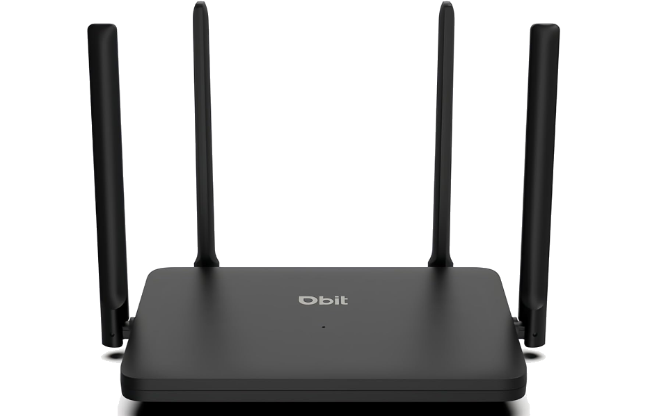

Dbit N300 Wireless Router
In today's connected world, a reliable internet connection is essential for everything from browsing the web to streaming movies and playing online games. At the heart of that connection is your router - a device that directs data between your home devices and the internet.
The Dbit N300 Router is an excellent choice for both beginners and tech-savvy users alike. Its simple setup makes it easy to get started, while its advanced features provide flexibility for those who want greater control over their network. Whether you're setting up your first home network or optimizing your existing one, the Dbit N300 offers a balance of simplicity and functionality to meet your needs.
This website documents the setup instructions, covers some frequently asked questions, and walks through common troubleshooting steps for the Dbit N300. With the resources provided, you will have the tools you need to get your router set up and configured to your liking.
Explore the links below to get started!


Easy Setup: Straightforward setup process with clear and intuitive steps, making it accessible for beginners.
Network Speed: Provides up to 300 Mbps wireless speeds, ideal for browsing, streaming, and online gaming even in households with multiple people connecting simultaneously.
Bandwidth Control: Allows users to manage and prioritize internet usage for specific devices, especially if they are under a metered connection.
Parental Controls: Enables restrictions on internet access for designated devices to enhance child safety.
Guest Network Support: Provides a separate network for visitors to improve security and privacy.
Port Forwarding: Facilitates secure access to internal network resources from external devices.
WPA/WPA2 Encryption: Ensures network security through industry-standard encryption protocols.
Compact Design: Space-saving and lightweight form factor that easily integrates into home or office environments.